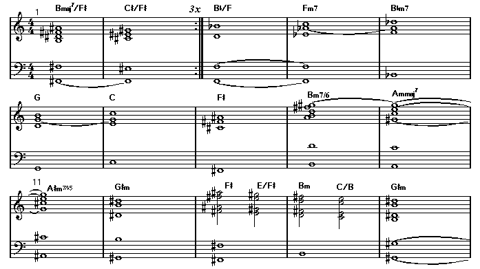
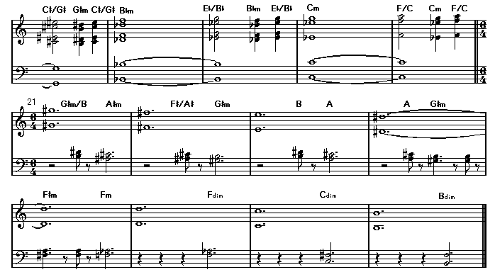
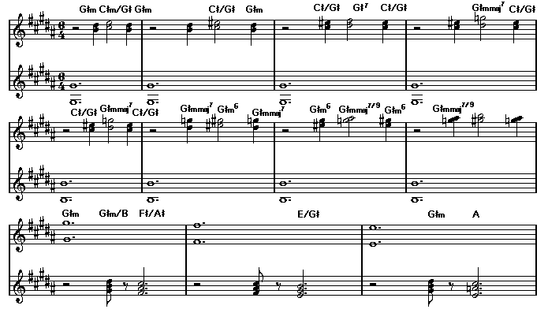
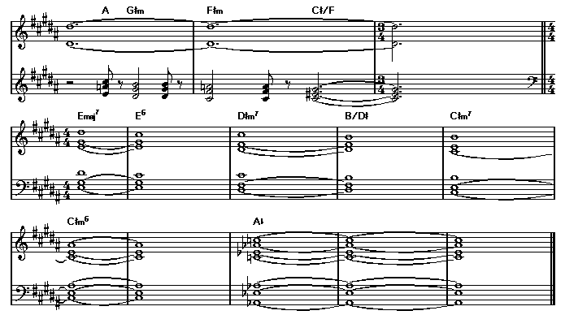

| Written by Banks/Collins/Gabriel/Hackett/Rutherford
From the Genesis album: Foxtrot, 1972 Transcribed by Hisao Chida (hchida@be.mbn.or.jp) |
Key: F-sharp major
Intro A: {Synth (Mellotron) solo, tempo rubato}
--------


[Text]
|4/4 |:Bmaj7/F# |C#/F# :| (x 3)
|Bb/F |Fm7 |Bbm7 |G |C |
|F# ||Bm7(13) |Ammaj7 |A#m7-5 |G#m |
|F# E/F# |Bm C/B ||G#m |C#/G# G#m C#/G#|
|Bbm |Eb/Bb Bbm Eb/Bb |Cm |F/C Cm F/C ||6/4
{Slower} (1:00-)
|6/4 G#m/B A#m | F#/A# G#m | B A |
| A G#m |F#m Fm |Fim |Cdim |Bdim ||
Intro B: (1:30-) {mp, tempo: 122}
--------
|Bmaj7 |C# |
{Enters the band, cresc.}
|:Bmaj7/F# |C#/F# :| (x 6)
|F# | ||
Chorus 1: (2:18-)
---------
|B/F# E/F# |F# B/F# |
Watcher of the skies watcher of all
|E/F# |F# |
His is a world alone no world is his own,
|B/F# E/F# |F# B/F# |
He whom life can no longer surprise,
|E/F# |F# | ||
Raising his eyes beholds a planet unknown.
|D#m/F# |C#/F# |D#m/F# B/F# |C#/F# ||
Verse 1: (2:56-)
--------
|D#m/F# |C#/F# |
Creatures shaped this planet's soil,
|D#m/F# |C#/F#
Now their reign has come to an end,
|Bmaj7/F# |
Has life again destroyed life,
|C# |
Do they play elsewhere, do they know
|Bmaj7/F# Bbm7/F |Ebsus4 Bb | F#|
more than their childhood games?________
|B/F# E/F# |F# B/F# |
Maybe the liz-ard's shed its tail,_____
|E/F# |F# ||
This is the end of man's long union with Earth.
Interlude: {Guitar solo} (3:34-)
----------
|Bm6/F# E/F# |F#m7-5 D/F# |
|Gm6 C/G |D/A ||
{Organ solo}
|Bb Eb/Bb Gb/Bb |B E/B G/B |
|C F/C Ab/C |C# F#/C# B/C# F#/C#||
[Chorus 2] (3:56-)
Judge not this race by empty remains
Do you judge God by his creatures when they are dead?
For now, the lizard's shed it's tail
This is the end of man's long union with Earth.
|F# ||Bmaj7/F# |C#/F# |
[Verse 2] (4:28-)
From life alone to life as one,
Think not now your journey's done
For though your ship be sturdy, no
Mercy has the sea, will you sur-
vive on the ocean of being?
Come ancient children hear what I say
This is my parting council for you on your way.
(Interlude) (5:06-)
[Chorus 3] (5:28-)
Sadly now your thoughts turn to the stars
Where we have gone you know you never can go.
Watcher of the skies watcher of all
This is your fate alone, this fate is your own.
|2/4 ||6/4
Coda: (5:52-)
-----
|6/4 F# |F#m6 |F# |F#m6 |F#m7 |F#m6 |F#m7-5 |
|F# |2/4 |6/4 |2/4 ||6/4
{Organ solo} (6:20-)


[Text]
|G#m C#m/G# G#m |G#m C#/G# G#m |
|G#m C#/G# D#m/G# C#/G# |
|G#m C#/G# G#mmaj7 C#/G# | '/, |
|G#mmaj7 G#m6 G#mmaj7 |
|G#m6 G#mmaj9 G#m6 |G#mmaj9 ||
{Slower} (6:42-)
|G#m G#m/B F#/A# | E/G# | G#m A |
| A G#m |F#m Db/F |3/4 ||4/4
{E.guitar solo with volume pedal, tempo rubato}
|4/4 Emaj7 |E6 |D#m7 |B/D# |C#m7 |C#m6 | ||
|Ab | | ||